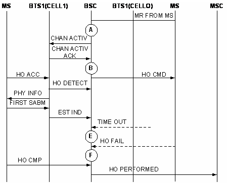

H3281A: CELL_INBSC_INTO_CELL_HO_DETECT_TIMES_SPEECH_VER_3_TCHF
H3282B: CELL_INBSC_INTO_CELL_HO_DETECT_TIMES_SPEECH_VER_3_TCHH
The counters are used to measure the number of times the BSC receives from the BTS an HO DETECT message in the target cell (current cell).
The channel involved in the measurements can be the AMR TCHF or the AMR TCHH.
Integer number or integer.
The measurements are triggered when BSC2 receives the HO DETECT message from the target BTS (see measurement point B in the figure). The measurements are based on the channel type.

This is an original counter without involving any formula.